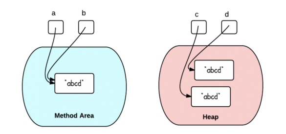
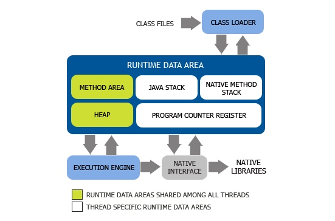

<!DOCTYPE HTML>
<html>
<head>
	<meta charset="utf-8">
	<title>  
	  
  	Java - NathanCHEN
  	
	</title>

  <meta name="HandheldFriendly" content="True">
  <meta name="MobileOptimized" content="320">
  <meta name="viewport" content="width=device-width, initial-scale=1">

	<link href="atom.xml" rel="alternate" title="NathanCHEN" type="application/atom+xml">

	<link href="asset/stylesheets/screen.css" media="screen, projection" rel="stylesheet" type="text/css">
	<link href="asset/stylesheets/font-awesome.min.css" media="screen, projection" rel="stylesheet" type="text/css">
	<script src="asset/javascripts/jquery.min.js"></script>
	<script src="asset/highlightjs/highlight.pack.js"></script>
	<link href="asset/highlightjs/styles/solarized_dark.css" media="screen, projection" rel="stylesheet" type="text/css">
<script>hljs.initHighlightingOnLoad();</script>

	<!--[if lt IE 9]><script src="asset/javascripts/html5.js"></script><![endif]-->
	<!-- <link href='http://fonts.googleapis.com/css?family=Nunito:400,300,700' rel='stylesheet' type='text/css'> -->
	<style type="text/css">
/* latin */
@font-face {
  font-family: 'Nunito';
  font-style: normal;
  font-weight: 300;
  src: local('Nunito-Light'), url(asset/font/1TiHc9yag0wq3lDO9cw0voX0hVgzZQUfRDuZrPvH3D8.woff2) format('woff2');
  unicode-range: U+0000-00FF, U+0131, U+0152-0153, U+02C6, U+02DA, U+02DC, U+2000-206F, U+2074, U+20AC, U+2212, U+2215, U+E0FF, U+EFFD, U+F000;
}
/* latin */
@font-face {
  font-family: 'Nunito';
  font-style: normal;
  font-weight: 400;
  src: local('Nunito-Regular'), url(asset/font/6TbRXKWJjpj6V2v_WyRbMX-_kf6ByYO6CLYdB4HQE-Y.woff2) format('woff2');
  unicode-range: U+0000-00FF, U+0131, U+0152-0153, U+02C6, U+02DA, U+02DC, U+2000-206F, U+2074, U+20AC, U+2212, U+2215, U+E0FF, U+EFFD, U+F000;
}
/* latin */
@font-face {
  font-family: 'Nunito';
  font-style: normal;
  font-weight: 700;
  src: local('Nunito-Bold'), url(asset/font/TttUCfJ272GBgSKaOaD7KoX0hVgzZQUfRDuZrPvH3D8.woff2) format('woff2');
  unicode-range: U+0000-00FF, U+0131, U+0152-0153, U+02C6, U+02DA, U+02DC, U+2000-206F, U+2074, U+20AC, U+2212, U+2215, U+E0FF, U+EFFD, U+F000;
}
	</style>
	
	<style type="text/css">
	.container .left-col{ opacity: 1;}
	#pagenavi a{ font-size: 1.3em;}
	#pagenavi .next:before{ top: 3px;}
	#pagenavi .prev:before{ top: 3px;}
	.container .mid-col .mid-col-container #content .archives .title{ font-size: 1.5em;}
	.container .mid-col .mid-col-container #content article{ padding: 15px 0px;}
	#header .subtitle {
		line-height: 1.2em;
		padding-top: 8px;
	}
	article pre{ background: none; border: none; padding: 0;}
	article .entry-content{text-align: left;}
	.share-comment{ padding: 25px 0px; clear: both;}
	hr{ margin: 20px 0px;border: 0; border-top:solid 1px #ddd;}
	</style>
  

</head>


<body>
	<div class="container">
		<div class="left-col">
			<div class="intrude-less">
				<header id="header" class="inner">
					<div class="profilepic">
						
					</div>
					<h1><a href="index.html">NathanCHEN</a></h1>
					<p class="subtitle"></p>
					<nav id="main-nav">
						<ul class="main">
							<li><a href="index.html">Home</a></li>
						    <!-- <li><a href="all.html">Blog</a></li>-->	
						    <li><a href="archives.html">Archives</a></li>
						</ul>
					</nav>

					<nav id="sub-nav">
						<div class="social">

<!-- 
			<a class="email" href="mailto:" title="Email">Email</a>
			<a class="facebook" href="http://www.facebook.com/" title="Facebook">Facebook</a>
			<a class="google" href="https://plus.google.com/" rel="author" title="Google+">Google+</a>
			<a class="twitter" href="http://twitter.com/" title="Twitter">Twitter</a>
			<a class="github" href="https://github.com/" title="GitHub">GitHub</a>
			<a class="coderwall" href="https://coderwall.com/" title="Coderwall">Coderwall</a>
		    <a class="stackoverflow" href="http://stackoverflow.com/users/" title="StackOverflow"></a>
			<a class="linkedin" href="http://www.linkedin.com/in/" title="LinkedIn">LinkedIn</a>
			<a class="pinterest" href="https://pinterest.com/" title="Pinterest">Pinterest</a>
			<a class="delicious" href="http://delicious.com/" title="Delicious">Delicious</a>
			<a class="pinboard" href="https://pinboard.in/u:" title="Pinboard">Pinboard</a>
			<a class="douban" href="https://www.douban.com/people/" title="Douban">Douban</a>
			<a class="quora" href="https://quora.com/" title="Quora">Quora</a>
			<a class="instagram" href="https://instagram.com/" title="Instagram">Instagram</a>
			<a class="behance" href="https://www.behance.net/" title="Behance">Behance</a>
			<a class="facebook" href="http://www.facebook.com/" title="Facebook">Facebook</a>
								<a class="twitter" href="http://twitter.com/" title="Twitter">Twitter</a>
								<a class="github" href="https://github.com/" title="GitHub">GitHub</a>
-->	
								

								<a class="rss" href="atom.xml" title="RSS">RSS</a>
							
						</div>
					</nav>
				</header>				
			</div>
		</div>	
		<div class="mid-col">
			<div class="mid-col-container"> <div id="content" class="inner">
<div itemscope itemtype="http://schema.org/Blog">


	<article class="post" itemprop="blogPost" itemscope itemtype="http://schema.org/BlogPosting">
		<div class="meta">
			<div class="date">
				<time datetime="2016-03-11T11:13:44+08:00" itemprop="datePublished">2016/3/11</time>
			</div>
			<div class="tags">posted in 
			
			    <a class='category' href='Java.html'>Java</a>&nbsp;
			 
			</div>
		</div>
		<h1 class="title" itemprop="name"><a href="14576660245189.html" itemprop="url">
		垃圾收集器与内存分配策略</a></h1>
		<div class="entry-content" itemprop="articleBody">
			
			<p>程序计数器、虚拟机栈、本地方法栈三个区域随线程而生，随线程而灭；栈中的栈帧随着方法的进入和退出而有条不紊地执行着出栈和入栈操作。每个栈帧中分配多少内存基本上是在类结构确定下来时就已知的，因此这几个区域的内存分配和回收都具备确定性。</p>

<p>而<strong><code>Java</code>堆和方法区</strong>则不一样，一个接口中的多个实现类需要的内存可能不一样，一个方法中的多个分支需要的内存也可能不一样，我们只有在程序处于运行期间时才能知道会创建哪些对象，<strong>这部分内存的分配和回收都是动态的</strong>，<strong>垃圾收集器所关注的是这部分内存</strong>。</p>

<h4 id="toc_0">引用技术算法</h4>

<p><strong>虚拟机并不是通过引用计数算法来判断对象是否存活的</strong>。</p>

<h4 id="toc_1">根搜索算法</h4>

<p>通过一系列的名为<code>CG Roots</code>的对象作为起始点，从这些节点开始向下搜索，搜索所走过的路径成为引用连（<code>Reference Chain</code>），<strong>当一个对象到<code>GC Roots</code>没有任何引用连相连时，则证明此对象是不可用的</strong>。</p>

<h4 id="toc_2">再谈引用</h4>

<ul>
<li>强引用：<strong>类似<code>Object obj = new Object()</code>这类的引用</strong>，只要强引用还存在，垃圾收集器永远不会回收掉引用的对象</li>
<li>软引用：用来描述一些还有用，但并非必需的对象。对于软引用关联着的对象，<strong>在系统将要发生内存溢出异常之前，将会把这些对象列进回收范围之中并进行第二次回收</strong>。</li>
<li>弱引用：用来描述非必需对象，它的强度比软引用更弱。被弱引用关联的对象只能生存到下一次垃圾收集发生之前。<strong>当垃圾收集器工作时，无论当前内存是否足够，都会回收掉只被弱引用关联的对象</strong>。</li>
<li>虚引用：也称为幽灵引用或者幻影引用。它是最弱的一种引用关系。<strong>为一个对象设置虚引用关联的唯一目的就是希望能在这个对象被收集器回收时收到一个系统通知</strong>。</li>
</ul>

<h4 id="toc_3">生存还是死亡</h4>

<p>在根搜索算法中不可达的对象，它们暂时处于“缓刑”阶段，要真正宣告一个对象死亡，至少要经历两次标记过程：如果对象在进行根搜索后发现没有与<code>GC Roots</code>相连接的引用链，那它将会被<strong>第一次标记并且进行一次筛选</strong>，筛选的条件是此对象是否有必要执行<code>finalize()</code>方法。当对象没有覆盖<code>finalize()</code>方法，或者<code>finalize()</code>方法已经被虚拟机调用过，虚拟机将这两种情况都视为“没有必要执行”。</p>

<p>如果这个对象被判定为有必要执行<code>finalize()</code>方法，那么这个对象将会被放置在一个名为<code>F-Queue</code>的队列之中，并在稍后由一条虚拟机自动建立的，低优先级的<code>Finalizer</code>线程去执行。这里所谓的“执行”是指虚拟机会触发这个方法，但并不承诺会等待它运行结束。稍后<code>GC</code>将对<code>F-Queue</code>中的对象<strong>进行第二次小规模的标记</strong>，只要对象能重新与引用链上的任何一个对象建立关联即可。</p>

<h4 id="toc_4">回收方法区</h4>

<p>方法区（或者<code>HotSpot</code>虚拟机中的永久机）的垃圾收集主要回收两部分内容：废弃常量和无用的类。</p>

<p>回收废弃常量与回收<code>Java</code>堆中的对象非常类似。例如一个字符串<code>abc</code>已经进入了常量池中，但是没有任何<code>String</code>对象引用常量池中的<code>abc</code>常量，也没有其他地方引用了这个字面量，如果在这个时候发生内存回收，而且必要的话，这个<code>abc</code>常量就会被系统清除出了常量池。</p>

<p>判定一个常量是否是“废弃常量”比较简单，而要<strong>判定一个类是否是“无用的类”的条件</strong>则相对苛刻。类要同时满足下面三个条件才能算是“无用的类”：</p>

<ul>
<li><strong>该类所有的实例都已经被回收</strong>，也就是<code>Java</code>堆中不存在该类的任何实例</li>
<li><strong>加载该类的<code>ClassLoader</code>已经被回收</strong></li>
<li><strong>该类对应的<code>java.lang.Class</code>对象没有在任何地方被引用</strong>，无法在任何地方通过反射访问该类的方法</li>
</ul>

<h3 id="toc_5">垃圾收集算法</h3>

<h4 id="toc_6">标记 - 清除算法</h4>

<p>首先标记出所有需要回收的对象，在标记完成后统一回收掉所有被标记的对象。</p>

<p>它的主要缺点有两个：一个是效率问题，标记和清除过程的效率都不高；另外一个是空间问题，标记清除之后会产生大量不连续的内存碎片，空间碎片太多可能会导致：当程序在以后的运行过程中需要分配较大对象时无法找到足够的连续内存而不得不提前触发另一次垃圾收集动作。</p>

<h4 id="toc_7">复制算法</h4>

<p>它将可用内存按容量划分为大小相等的两块，每次只使用其中的一块。<strong>当这一块的内存用完了，就将还存活着的对象复制到另一块上面，然后再把已使用过的内存空间一次清理掉</strong>。</p>

<p>这样使得每次都是对其中的一块进行内存回收，内存分配时也就不用考虑内存碎片等复杂情况，只要移动堆顶指针，按顺序分配内存即可。</p>

<p>这种算法的代价是将内存缩小为原来的一半。</p>

<p>新生代的对象98%是朝生夕死的，所以并不需要按照1：1的比例来划分内存空间，而是将内存分为<strong>一块较大的<code>Eden</code>空间和两块较小的<code>Survivor</code>空间</strong>，<strong>每次使用<code>Eden</code>和其中的一块<code>Survivor</code></strong>。当回收时，<strong>将<code>Eden</code>和<code>Survivor</code>中还存活着的对象一次性地拷贝到另外一块<code>Survivor</code>空间上</strong>，最后清理掉<code>Eden</code>和刚才用过的<code>Survivor</code>的空间。</p>

<p><code>HotSpot</code>虚拟机默认<code>Eden</code>和<code>Survivor</code>的大小比例是8：1，只有10%的内存会被浪费掉（备用<code>Survivor</code>），但是我们没办法保证每次回收都只有不多于10%的对象存活，当<code>Survivor</code>空间不够用时，需要依赖其他内存（老年代）进行分配担保（<code>Handle Promotion</code>）</p>

<h4 id="toc_8">标记 - 整理算法</h4>

<p>根据老年代的特点，有人提出了另外一种“标记 - 整理”（Mark-Compact）算法，标记过程仍然与“标记-清楚”算法一样，但后续步骤不是直接对可回收对象进行清理，而是让所有存活的对象都向一端移动，然后直接清理掉端边界以外的内存。</p>

<h4 id="toc_9">分代收集算法</h4>

<p>根据对象的存活周期的不同将内存划分为几块。一般是把Java堆分为新生代和老年代，这样就可以根据各个年代的特点采用最适当的收集算法。</p>

<p><strong>在新生代中</strong>，每次垃圾收集时都发现有大批对象死去，只有少量存活，那就<strong>选用复制算法</strong>，只需要付出少量存活对象的复制成本就可以完成收集。</p>

<p><strong>老年代</strong>中因为对象存活率高、没有额外空间对它进行担保，就必须<strong>使用“标记-清理”或“标记-整理”算法</strong>来进行回收。</p>

<h3 id="toc_10">内存分配与回收策略</h3>

<p>自动内存管理最终可以归结为自动化地解决了两个问题：</p>

<ul>
<li>给对象分配内存</li>
<li>回收分配给对象的内存</li>
</ul>

<p>对象的内存分配，就是在堆上分配，对象主要分配在新生代的<code>Eden</code>区上，如果启动了本地线程分配缓冲，将按线程优先在<code>TLAB</code>上分配。</p>

<p>几条最普通的内存分配规则。</p>

<h4 id="toc_11">对象优先在Eden分配</h4>

<p>大多数情况下，对象在新生代Eden区中分配。当Eden区没有足够的空间进行分配时，虚拟机将发起一次Minor GC。</p>

<pre><code>新生态GC（Minor GC）：指发生在新生代的垃圾收集动作，Minor GC非常频繁，一般回收速度也比较快。
老年代GC（Major GC / Full GC）：指发生在老年代的GC。
</code></pre>

<h4 id="toc_12">大对象直接进入老年代</h4>

<p>所谓大对象就是指，需要大量连续内存空间的Java对象，最典型的大对象就是那种很长的字符串及数组。经常出现大对象容易导致内存还有不少空间时就提前触发垃圾收集以获取足够的连续空间来“安置”它们。</p>

<blockquote>
<p>大对象对虚拟机的内存分配来说就是一个坏消息；比遇到一个大对象更加坏的消息就是遇到一群“朝生夕灭”的“短命大对象”。</p>
</blockquote>

<h4 id="toc_13">长期存活的对象将进入老年代</h4>

<p>虚拟机给每个对象定义了一个对象年龄（<code>Age</code>）计数器。如果对象在<code>Eden</code>出生并经过第一次<code>Minor GC</code>后仍然存活，并且能被<code>Survivor</code>容纳的话，将被移动到<code>Survivor</code>空间中，并将对象年龄设为1。对象在<code>Survivor</code>区中每熬过一个<code>Minor GC</code>，年龄就增加1岁，当它的年龄增加到一定程度（默认是15岁）时，就会被晋升到老年代。</p>

<h4 id="toc_14">动态对象年龄判定</h4>

<p>为了能更好地适应不同程序的内存状况，虚拟机并不总是要求对象的年龄必须达到<code>MaxTenuringThreshold</code>才能晋升到老年代；<strong>如果在<code>Survivor</code>空间中相同年龄所有对象大小的总和大于<code>Survivor</code>空间的一半</strong>，年龄大于或等于该年龄的对象就可以直接进入老年代，无须等到<code>MaxTenuringThreshold</code>中要求的年龄。</p>

<h4 id="toc_15">空间分配担保</h4>

<p>在发生<code>Minor GC</code>时，虚拟机会检测之前每次晋升到老年代的平均大小是否大于老年代的剩余空间大小，如果大于，则改为直接进行一次<code>Full GC</code>。如果小于，则查看<code>HandlePromotionFailure</code>设置是否允许担保失败；如果允许，那只会进行<code>Minor GC</code>；如果不允许，则也要改为进行一次<code>Full GC</code>。</p>

<p>新生代使用复制收集算法，但为了内存利用率，只使用其中一个<code>Survivor</code>空间来作为轮换备份，因此当出现大量对象在<code>Minor GC</code>后仍然存活的情况时，就需要老年代进行分配担保，让<code>Survivor</code>无法容纳的对象直接进入老年代。</p>


			
			
		</div>

	</article>
 
	<article class="post" itemprop="blogPost" itemscope itemtype="http://schema.org/BlogPosting">
		<div class="meta">
			<div class="date">
				<time datetime="2016-03-10T20:07:18+08:00" itemprop="datePublished">2016/3/10</time>
			</div>
			<div class="tags">posted in 
			
			    <a class='category' href='Java.html'>Java</a>&nbsp;
			 
			</div>
		</div>
		<h1 class="title" itemprop="name"><a href="14576116389215.html" itemprop="url">
		自动内存管理机制</a></h1>
		<div class="entry-content" itemprop="articleBody">
			
			<h4 id="toc_0">程序计数器</h4>

<p>程序计数器是一块较小的内存空间，它的作用可以看作是当前线程所执行的字节码的行号指示器。</p>

<p>字节码解释器工作时，就是通过改变这个计数器的值来选取下一条需要执行的字节码指令。</p>

<p>由于<code>Java</code>虚拟机的多线程是通过轮流切换并分配处理器执行时间的方式来实现的，在任何一个确定的时刻，一个内核只会执行一条线程中的指令。</p>

<p>因此，为了线程切换后能恢复到正确的执行位置，每条线程都需要有一个独立的程序计数器，每条线程之间的计数器互不影响，独立存储。<strong>我们称这类内存区域为“线程私有”的内存</strong>。</p>

<p>如果线程正在执行的是一个<code>Java</code>方法，这个计数器记录的是正在执行的虚拟机字节码指令的地址。</p>

<h4 id="toc_1"><code>Java</code>虚拟机栈</h4>

<p><code>Java</code>虚拟机栈也是线程私有的，它的生命周期与线程相同。</p>

<p>虚拟机栈描述的是<code>Java</code>方法执行的内存模型：<strong>每个方法被执行的时候都会同时创建一个栈帧（<code>Stack Frame</code>）</strong>用于存储局部变量表、操作栈、动态链接、方法出口等信息。每一个方法被调用直至执行完成的过程，就对应着一个栈帧在虚拟机栈中从入栈到出栈的过程。</p>

<p>局部变量表存放了编译器可知的各种基本数据类型（<code>boolean、byte、char、short、int、float、long、double</code>）、对象引用和<code>returnAddress</code>类型（指向了一条字节码指令的地址）</p>

<p>其中64位长度的<code>long</code>和<code>double</code>类型的数据会占用两个局部变量空间（<code>slot</code>），其余的数据类型只占用1个。</p>

<p>局部变量表所需要的内存空间在编译期间完成分配，当进入一个方法时，这个方法需要在桢中分配多大的局部变量空间是完全确定的，在方法运行期间不会改变局部变量表的大小。</p>

<h4 id="toc_2">本地方法栈</h4>

<p>本地方法栈与虚拟机栈所发挥的作用是非常相似的，其区别不过是虚拟机栈为虚拟机执行<code>Java</code>方法（也就是字节码）服务，而本地方法栈则是为虚拟机使用到的<code>Native</code>方法服务。</p>

<h4 id="toc_3"><code>Java</code>堆</h4>

<p>Java堆（Java Heap）是Java虚拟机所管理的内存中最大的一块。</p>

<p><strong>Java堆是被所有线程共享</strong>的一块内存区域，在虚拟机启动时创建。此内存区域的唯一目的就是存放对象实例，<strong>几乎所有的对象实例都在这里分配内存</strong>。</p>

<p>Java堆是垃圾收集器管理的主要区域，因此很多时候也被称作“GC堆”。</p>

<h4 id="toc_4">方法区（Method Area）</h4>

<p>方法区与Java堆一样，是各个线程共享的内存区域，它用于存储已被虚拟机加载的类信息、常量、静态变量、即时编译器编译后的代码等数据。</p>

<p>Java虚拟机规范对这个区域的限制非常宽松，除了和Java堆一样不需要连续的内存和可以选择固定大小或者可扩展外，还可以选择不实现垃圾收集。</p>

<h4 id="toc_5">运行时常量池</h4>

<p>运行时常量池（<code>Runtime Constant Pool</code>）是方法区的一部分。<code>Class</code>文件中除了有类的版本、字段、方法、接口等描述等信息外，还有一项信息是常量池（<code>Constant Pool Table</code>），<strong>用于存放编译期生成的各种字面量和符号引用</strong>，这部分内容将在类加载后存放到方法区的运行时常量池中。</p>

<p>运行时常量池相对于<code>Class</code>文件常量池的另外一个重要特征是具备动态性。<code>Java</code>不要求一定只能在编译器产生，也就是并非预置入<code>Class</code>文件中常量池的内容才能进入方法区运行时常量池，运行期间也可能将新的常量放入池中，这种特征用得比较多的就是<code>String</code>类的<code>intern()</code>方法。</p>

<h3 id="toc_6">对象访问</h3>

<pre><code class="language-java">Object obj = new Object();
</code></pre>

<p>如果这句代码出现在方法体中，那<code>Object obj</code>这部分的词义将会反映到<code>Java</code>栈的本地变量表中，作为一个<code>reference</code>类型数据出现。</p>

<p>而<code>new Object()</code>这部分的语义将会反映到<code>Java</code>堆中，形成一块存储了<code>Object</code>类型所有实例数据值的结构化内存，根据具体类型以及虚拟机实现的对象内存布局的不同，这块内存的长度是不固定的。另外，在<code>Java</code>堆中还必须包含能查找此对象类型数据（如对象类型、父类、实现的接口、方法等）的地址信息，这些类型数据则存储在方法区中。</p>

<p>不同虚拟机实现的对象访问方式会有所不同，主流的访问方式有两种：使用句柄和直接指针。</p>

<ul>
<li>如果使用句柄访问方式，<code>Java</code>堆中将会划分出一块内存来作为句柄池，<code>reference</code>中存储的就是对象的句柄地址，而句柄中包含了对象实例数据和类型数据各自的具体地址信息。</li>
</ul>

<p></p>

<ul>
<li>如果使用直接指针访问方式，<code>Java</code>堆对象的布局中就必须考虑如何放置访问类型数据的相关信息，<code>reference</code>中直接存储的就是地址</li>
</ul>

<p></p>

<ul>
<li>使用句柄访问方式的最大好处就是reference中存储的是稳定的句柄地址，<strong>在对象被移动时只会改变句柄中的实例数据指针</strong>，而reference本身不需要被修改</li>
<li>使用直接指针访问方式的最大好处就是速度更快，它<strong>节省了一次指针定位的时间开销</strong>，由于对象的访问在Java中非常频繁，因此这类开销积少成多。</li>
</ul>


			
			
		</div>

	</article>
 
	<article class="post" itemprop="blogPost" itemscope itemtype="http://schema.org/BlogPosting">
		<div class="meta">
			<div class="date">
				<time datetime="2016-03-07T10:34:07+08:00" itemprop="datePublished">2016/3/7</time>
			</div>
			<div class="tags">posted in 
			
			    <a class='category' href='Java.html'>Java</a>&nbsp;
			 
			</div>
		</div>
		<h1 class="title" itemprop="name"><a href="14573180475320.html" itemprop="url">
		该如何创建字符串，使用“ ”还是构造函数</a></h1>
		<div class="entry-content" itemprop="articleBody">
			
			<h5 id="toc_0">实例一</h5>

<pre><code class="language-java">String a = &quot;abcd&quot;;
String b = &quot;abcd&quot;;
System.out.println(&quot;a == b : &quot;+(a == b)); // true
System.out.println(&quot;a.equals(b) : &quot;+(a.equals(b))); // true
</code></pre>

<p>当相同的字符串常量被多次创建时，只会保存字符串常亮的一份副本，这称为“字符串驻留”。在Java中，所有编译时字符串常亮都是驻留的。</p>

<h5 id="toc_1">实例二</h5>

<pre><code class="language-java">String c = new String(&quot;abcd&quot;);
String d = new String(&quot;abcd&quot;);
System.out.println(&quot;c == d : &quot;+(c == d)); // false
System.out.println(&quot;c.equals(d) : &quot;+(c.equals(d))); // true
</code></pre>

<p></p>

<h3 id="toc_2">运行时字符串驻留</h3>

<pre><code class="language-java">String c = new String(&quot;abcd&quot;).intern();
String d = new String(&quot;abcd&quot;).intern();
System.out.println(&quot;c == d : &quot;+(c == d)); // true
System.out.println(&quot;c.equals(d) : &quot;+(c.equals(d))); // true    （JDK1.7）
</code></pre>


			
			
		</div>

	</article>
 
	<article class="post" itemprop="blogPost" itemscope itemtype="http://schema.org/BlogPosting">
		<div class="meta">
			<div class="date">
				<time datetime="2016-03-04T15:35:27+08:00" itemprop="datePublished">2016/3/4</time>
			</div>
			<div class="tags">posted in 
			
			    <a class='category' href='Java.html'>Java</a>&nbsp;
			 
			</div>
		</div>
		<h1 class="title" itemprop="name"><a href="14570769272462.html" itemprop="url">
		面向GC的Java编程</a></h1>
		<div class="entry-content" itemprop="articleBody">
			
			<h3 id="toc_0">GC分代的基本假设</h3>

<p>GC分代的基本假设是：</p>

<p>绝大部分对象的生命周期都非常短暂，存活时间短。</p>

<p>基于这个前提，在编码过程中，我们应该尽可能地缩短对象的生命周期。</p>

<p>结论：</p>

<ul>
<li>分配小对象的开销非常小，不要吝啬去创建</li>
<li>GC最喜欢这种小而短命的对象</li>
<li>让对象的生命周期尽可能短，例如在方法体内创建，使其能尽快地在<code>YoungGC</code>中被回收，不会晋升到年老代（<code>Old Generation</code>）</li>
</ul>

<h3 id="toc_1">对象分配的优化</h3>

<p>基于大部分对象都是小而短命，并且不存在多线程的数据竞争。这些小对象的分配，会优先在线程私有的<code>TLAB</code>中分配，<code>TLAB</code>中创建的对象，不存在锁甚至是<code>CAS</code>的开销。</p>

<p><code>TLAB</code>占用的空间在<code>Eden Generation</code></p>

<p>当对象比较大，<code>TLAB</code>的空间不足以放下，而<code>JVM</code>又认为当前线程占用的<code>TLAB</code>剩余空间还足够时，就会直接在<code>Eden Generation</code>上分配，此时是存在并发竞争的，所以会有<code>CAS</code>的开销，但是也还好。</p>

<p>当对象大到<code>Eden Generation</code>放不下时，<code>JVM</code>只能尝试去<code>Old Generation</code>分配，这种情况需要尽可能避免，因为一旦在<code>Old Generation</code>上分配，这个对象只能被<code>Old Generation</code>的<code>GC</code>或者是<code>Full GC</code>回收了。</p>

<h3 id="toc_2">不可变对象的好处</h3>

<p><code>GC</code>算法在扫描存活对象时通常需要从<code>ROOT</code>节点开始，扫描所有存活对象的引用，构建出对象图。</p>

<p>不可变对象对<code>GC</code>的优化，主要体现在<code>Old Generation</code>中。</p>

<p>如果存在<code>Old Generation</code>的对象引用了<code>Young Generation</code>的对象，那么在每次<code>YoungGC</code>的过程中，就必须考虑到这种情况。</p>

<h5 id="toc_3">卡表（Card Table）</h5>

<p>当<code>Old Generation</code>中的对象发生对<code>Young Generation</code>中的对象产生新的引用关系或释放引用时，都会在卡表中相应的标记上标为脏（<code>dirty</code>）；而当<code>YoungGC</code>时，只需要扫描这些<code>dirty</code>的项就可以了。</p>

<p>可变对象对其他对象的引用关系可能会频繁变化，并且有可能在运行过程中持有越来越多的引用，特别是容器。这些都会导致对应的卡表项被频繁标记为<code>dirty</code>。</p>

<p>而不可变对象的引用关系非常稳定，在扫描卡表时就不会扫到它们对应的项了。</p>

<blockquote>
<p>这里的不可变对象，不是指仅仅自身引用不可变的<code>final</code>对象，而是真正的<code>Immutable Objects</code>。</p>
</blockquote>

<h3 id="toc_4">指定容器初始化大小</h3>

<p>如果采用默认无参构造函数，构建一个ArrayList，不断增加元素知道OOM，那么在此过程中会导致：</p>

<ul>
<li>多次数组扩容，重新分配更大空间的数组</li>
<li>多次数组拷贝</li>
<li>内存碎片</li>
</ul>

<h3 id="toc_5">对象池</h3>

<p>为了减少对象分配开销，提高性能，可能有人会采用对象池的方式来缓存对象集合，作为复用的手段。</p>

<p>但是对象池中的对象由于在运行期长期存活，大部分会晋升到Old Generation，因此无法通过YoungGC回收。</p>

<p>可以借助成熟的开源框架，例如Apache Commons Pool</p>

<h3 id="toc_6">对象作用域</h3>

<p>尽可能缩小对象的作用域，即生命周期</p>

<ul>
<li>如果可以在方法内声明的局部变量，就不要声明为实例变量</li>
<li>除非你的对象是单例的或者不变的，否则尽可能少地声明static变量</li>
</ul>

<h3 id="toc_7">Reference</h3>

<p><a href="http://coolshell.cn/articles/11541.html">http://coolshell.cn/articles/11541.html</a></p>


			
			
		</div>

	</article>
 
	<article class="post" itemprop="blogPost" itemscope itemtype="http://schema.org/BlogPosting">
		<div class="meta">
			<div class="date">
				<time datetime="2016-03-04T09:47:09+08:00" itemprop="datePublished">2016/3/4</time>
			</div>
			<div class="tags">posted in 
			
			    <a class='category' href='Java.html'>Java</a>&nbsp;
			 
			</div>
		</div>
		<h1 class="title" itemprop="name"><a href="14570560294204.html" itemprop="url">
		浅析`Java`虚拟机结构与机制</a></h1>
		<div class="entry-content" itemprop="articleBody">
			
			<p></p>

<h3 id="toc_0">类加载器子系统（<code>Class Loader</code>）</h3>

<p><strong>类加载器子系统负责加载编译好的<code>.class</code>字节码文件，并装入内存，使<code>JVM</code>可以实例化或以其它方式使用加载后的类</strong>。</p>

<p><code>JVM</code>的类加载子系统支持在运行时的动态加载。</p>

<p>动态加载的优点有很多，例如可以节省内存空间、灵活地从网络上加载类；另一好处是可以通过命名空间的分割来实现类的隔离，增强了整个系统的安全性。</p>

<h4 id="toc_1">ClassLoader的分类：</h4>

<ul>
<li>启动类加载器（<code>Bootstrap class loader</code>）：负责加载<code>rt.jar</code>文件中所有的<code>Java</code>类，即<code>Java</code>的核心类都是由该<code>ClassLoader</code>加载。</li>
<li>扩展类加载器（<code>Extension class loader</code>）：负责加载一些扩展功能的<code>jar</code>包。</li>
<li>系统类加载器（<code>System class loader</code>）：负责加载启动参数中指定的<code>classpath</code>中的<code>jar</code>包及目录，通常我们自己写的<code>Java</code>类也是由该<code>ClassLoader</code>加载。</li>
<li>用户自定义类加载器（<code>User defined class loader</code>）：由用户自定义类的加载规则，可以手动控制加载过程中的步骤。</li>
</ul>

<h4 id="toc_2">ClassLoader的工作原理</h4>

<p>类加载分为装载、链接、初始化三步。</p>

<h5 id="toc_3">加载</h5>

<p><strong>通过类的全限定名和<code>ClassLoader</code>加载类，主要是将指定的<code>.class</code>文件加载至<code>JVM</code>。</strong>当类被加载以后，在<code>JVM</code>内部就以“类的全限定名+<code>ClassLoader</code>实例<code>ID</code>”来标明类。</p>

<p><strong>在内存中，<code>ClassLoader</code>实例和类的实例都位于堆中，它们的类信息都位于方法区。</strong></p>

<p>装载过程采用一种被称为“双亲委派模型（<code>Parent Delegation Model</code>）”的方式，当一个<code>ClassLoader</code>要加载类时，它会先请求它的双亲<code>ClassLoader</code>加载类，而它的双亲<code>ClassLoader</code>会继续把加载请求提交再上一级的<code>ClassLoader</code>，直到启动类加载器。只有其双亲<code>ClassLoader</code>无法加载指定的类时，它才会自己加载类。</p>

<p>双亲委派模型是<code>JVM</code>的第一道安全防线，它保证了类的安全加载，这里同时依赖了类加载器隔离的原理：不同类加载器加载的类之间是无法直接交互的，即使是同一个类，被不同的<code>ClassLoader</code>加载，它们也无法感知到彼此的存在。<strong>这样即使有恶意的类冒充自己在核心包（<code>java.lang</code>）下，由于它无法被启动类加载器加载，也造成不了危害</strong>。</p>

<h5 id="toc_4">链接</h5>

<p><strong>链接的任务是把二进制的类型信息合并到<code>JVM</code>运行时状态中去。</strong></p>

<p>链接分为以下三步：</p>

<ul>
<li>验证：校验<code>.class</code>文件的正确性，确保该文件是符合规范定义的，并且适合当前<code>JVM</code>使用。</li>
<li>准备：为类分配内存，同时初始化类中的静态变量赋值为默认值。</li>
<li>解析（可选）：主要是把类的常量池中的符号引用解析为直接引用，这一步可以在用到相应的引用时再解析。</li>
</ul>

<h5 id="toc_5">初始化</h5>

<p><strong>初始化类中的静态变量，并执行类中的<code>static</code>代码、构造函数。</strong></p>

<p><code>JVM</code>规范严格定义了何时需要对类进行初始化：</p>

<ul>
<li>通过<code>new</code>关键字、反射、<code>clone</code>、反序列化机制实例化对象时</li>
<li>调用类的静态方法时</li>
<li>调用类的静态字段或对其赋值时</li>
<li>通过反射调用类的方法时</li>
<li>初始化该类的子类时（初始化子类前其父类必须已经被初始化）</li>
<li><code>JVM</code>启动时被标记为启动类的类</li>
</ul>

<h3 id="toc_6"><code>JAVA</code>栈（<code>Java Stack</code>）</h3>

<p><strong><code>Java</code>栈由栈帧组成，一个帧对应一个方法调用。调用方法时压入栈帧，方法返回时弹出栈帧并抛弃。<code>Java</code>栈的主要任务是存储方法参数、局部变量、中间运算结果，并且提供部分其它模块工作需要的数据。</strong></p>

<p><strong><code>Java</code>栈是线程私有的</strong>，这就保证了线程安全性，使得程序员无需考虑栈同步访问的问题，只有线程本身可以访问它自己的局部变量区。</p>

<p>它分为三部分：局部变量区、操作数栈、桢数据区。</p>

<h4 id="toc_7">局部变量区</h4>

<p>局部变量区是以字长为单位的数组，在这里，<code>byte</code>、<code>short</code>、<code>char</code>类型会被转换成<code>int</code>类型存储，除了<code>long</code>和<code>double</code>类型占两个字长以外，其余类型都只占用一个字长。</p>

<p><code>boolean</code>类型在编译时会被转换成<code>int</code>或<code>byte</code>类型，<code>boolean</code>数据会被当做<code>byte</code>类型数据来处理。局部变量区也会包含对象的引用，包括类引用、接口引用以及数组引用。</p>

<p>局部变量区包含了方法参数和局部变量，此外，实例方法隐含第一个局部变量<code>this</code>，它指向调用该方法的对象引用。对于对象，局部变量区中永远只有指向堆的引用。</p>

<h4 id="toc_8">操作数栈</h4>

<p>操作数栈也是以字长为单位的数组，但是正如其名，它只能进行入栈出栈的基本操作。在进行计算时，操作数被弹出栈，计算完毕后再入栈。</p>

<h4 id="toc_9">帧数据区</h4>

<p>帧数据区的任务主要有：</p>

<ul>
<li>记录指向类的常量池的指针，以便于解析</li>
<li>帮助方法的正常返回，包括恢复调用该方法的栈帧，设置PC寄存器指向调用方法对应的下一条指令，把返回值压入调用栈帧的操作数栈中</li>
<li>记录异常表，发生异常时将控制权交由对应异常的<code>catch</code>字句，如果没有找到对应的<code>catch</code>字句，会恢复调用方法的栈帧并重新抛出异常。</li>
</ul>

<p>局部变量区和操作数栈的大小依照具体方法在编译时就已经确定。调用方法时会从方法区中找到对应类的类型信息，从中得到具体方法的局部变量区和操作数栈的大小，依次分配栈帧内存，压入<code>Java</code>栈</p>

<h3 id="toc_10">本地方法栈（Native Method Stack）</h3>

<p>本地方法栈类似于Java栈，主要存储了本地方法调用的状态。</p>

<h3 id="toc_11">方法区（Methods Area）</h3>

<p>类型信息和类的静态变量都存储在方法区中。</p>

<p>方法区中对于每个类存储了以下数据：</p>

<ul>
<li>类及其父类的全限定名</li>
<li>类的类型（class还是interface）</li>
<li>访问修饰符（public，abstract，final）</li>
<li>实现的接口的全限定名的列表</li>
<li>常量池</li>
<li>字段信息</li>
<li>方法信息</li>
<li>静态常量</li>
<li>ClassLoader引用</li>
<li>Class引用</li>
</ul>

<p>可见类的所有信息都存储在方法区中。由于方法区是所有线程共享的，所以必须保证线程安全。举例来说，如果两个类同时要加载一个尚未被加载的类，那么一个类会请求它的<code>ClassLoader</code>去加载需要的类，另一个类只能等待而不会重复加载。</p>

<p>此外，为了加快调用方法的速度，通常还会为每个非抽象类创建私有的方法表，方法表是一个数组，存放了实例可能被调用的实例方法的直接引用。</p>

<h3 id="toc_12">堆（Heap）</h3>

<p>堆用于存储对象实例以及数组值。</p>

<p>堆中有指向类数据的指针，该指针指向了方法区中对应的类型信息。</p>

<p>堆中还可能存放了指向方法表的指针。</p>

<p><strong>堆是所有线程共享的</strong>，所以在进行实例化对象等操作时，需要解决同步问题。</p>

<h4 id="toc_13">新生代（New Generation）</h4>

<p>大多数情况下，新对象都被分配在新生代中，新生代由Eden Space和两块相同大小的Survivor Space组成，后两者主要用于Minor GC时对象复制。</p>

<p>JVM在Eden Space中会开辟一小块独立的TLAB（Thread Local Allocation Buffer）区域用于更高效的内存分配。</p>

<p>在堆上分配内存需要锁定整个堆，而在TLAB上则不需要，JVM在分配对象时会尽量在TLAB上分配，以提高效率。</p>

<h4 id="toc_14">旧生代（Old Generation/Tenuring Generation）</h4>

<p>在新生代中存活时间较久的对象将会被转入旧生代，旧生代进行垃圾收集的频率没有新生代高。</p>

<h3 id="toc_15">执行引擎</h3>

<p>执行引擎是<code>JVM</code>执行<code>Java</code>字节码的核心，执行方式主要分为解释执行、编译执行、自适应优化执行、硬件芯片执行方式。</p>

<p><code>JVM</code>的指令集是基于栈而非寄存器的，这样做的好处在于可以使指令尽可能紧凑，便于快速地在网络上传输，同时也很容易适应通用寄存器较少的平台，并且有利于代码优化，由于<code>Java栈</code>和<code>PC寄存器</code>是线程私有的，线程之间无法互相干涉彼此的栈。每个线程拥有独立的<code>JVM执行引擎</code>实例。</p>

<p><code>JVM</code>指令由单字节操作码和若干操作数组成。对于需要操作数的指令，通常是先把操作数压入操作数栈，即使是对局部变量赋值，也会先入栈再赋值。</p>

<h4 id="toc_16">解释执行</h4>

<p>解释执行中有几种优化方式：</p>

<ul>
<li>栈顶缓存</li>
</ul>

<p>将位于操作数栈顶的值直接缓存在寄存器上，对于大部分只需要一个操作数的指令而言，就无需再入栈，可以直接在寄存器上进行计算，结果压入操作数栈。这样便减少了寄存器和内存的交换开销。</p>

<ul>
<li>部分栈帧共享</li>
</ul>

<p>被调用方法可将调用方法栈帧中的操作数栈作为自己的局部变量区，这样在获取方法参数时减少了复制参数的开销。</p>

<ul>
<li>执行机器指令</li>
</ul>

<p>在一些特殊情况下，JVM会执行机器指令以提高速度。</p>

<h4 id="toc_17">编译执行</h4>

<p>为了提升执行速度，SUN JDK提供了将字节码编译为机器指令的支持，主要利用了JIT编译器在运行时进行编译，它会在第一次执行时编译字节码为机器码并缓存，之后就可以重复利用了。</p>

<h4 id="toc_18">自适应优化执行</h4>

<p>自适应优化执行的思想是程序中10%-20%的代码占据了80%-90%的执行时间，所以通过将那少部分代码编译为优化过的机器码就可以大大提升执行效率。</p>


			
			
		</div>

	</article>
  

</div>
<nav id="pagenavi">
	 <a class="prev" href="Java.html">Prev</a>  
	 <a class="next" href="Java_2.html">Next</a> 
	<div class="center"><a href="archives.html">Blog Archives</a></div>

</nav>

</div>


        </div>
			<footer id="footer" class="inner">Copyright &copy; 2014
Powered by <a target="_blank" href="http://www.mweb.im">MWeb</a> &nbsp;&nbsp; 
Theme by <a href="http://shashankmehta.in/archive/2012/greyshade.html">Shashank Mehta</a>
      </footer>
		</div>
	</div>


</body>
</html>